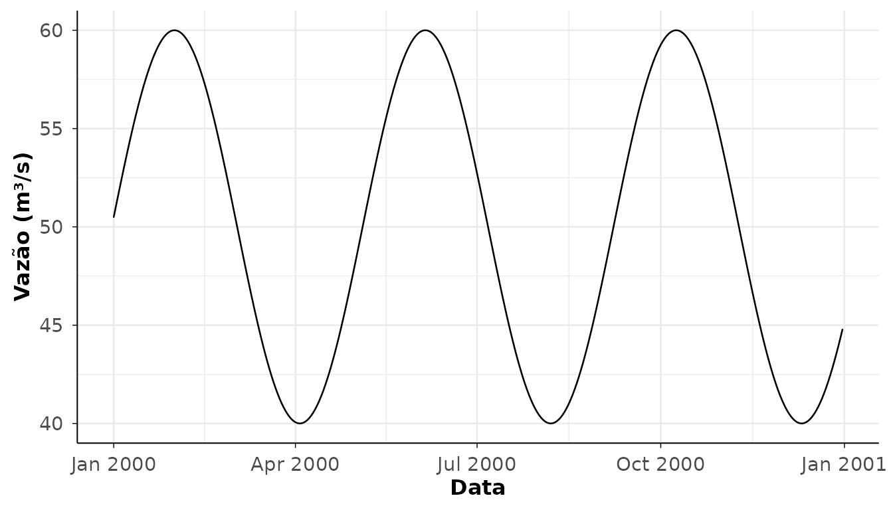

Introdução
O hydroDataBR é um pacote R para obter, padronizar,
analisar, visualizar e exportar dados hidrológicos da Agência Nacional
de Águas e Saneamento Básico (ANA), com foco em séries diárias, produtos
fluviométricos e fluxos de trabalho reprodutíveis.
A API pública é intencionalmente enxuta. A aquisição de dados ANA é
centralizada em get_ana_data() e
get_ana_data_batch(). As etapas de análise, gráficos,
tabelas e exportação usam funções fonte-neutras:
Banco interno ANA
O pacote inclui um retrato estático de dados da ANA obtido em junho de 2026. Esse banco interno é útil para consultas rápidas, exemplos e diagnósticos offline, mas não substitui os serviços online da ANA.
library(hydroDataBR)
stations <- filter_ana_stations(
station_type = "fluviometric"
)
if ("discharge_start_date" %in% names(stations)) {
stations <- stations[!is.na(stations$discharge_start_date), ]
}
head(stations)
#> [1] station_code station_name
#> [3] station_type state_code
#> [5] municipality basin_code
#> [7] basin_name latitude
#> [9] longitude altitude_m
#> [11] drainage_area_km2 operator
#> [13] responsible_agency is_operating
#> [15] discharge_start_date discharge_end_date
#> [17] telemetric_start_date telemetric_end_date
#> [19] stage_start_date stage_end_date
#> [21] rainfall_start_date rainfall_end_date
#> [23] has_discharge_measurements has_telemetry
#> [25] has_stage_data has_rainfall_data
#> [27] last_update
#> <0 rows> (or 0-length row.names)Os dados online atuais podem divergir do retrato incluído no pacote.
Contrato de série diária
As funções de leitura e aquisição convergem para uma estrutura padronizada de série diária. As colunas principais são:
station_code
date
variable
value
unit
consistency_level
source_status
sourceO exemplo abaixo cria uma série diária pequena, apenas para demonstrar o fluxo de análise, gráfico e tabela sem depender de serviços online.
daily <- data.frame(
station_code = "00000000",
date = seq.Date(as.Date("2000-01-01"), as.Date("2000-12-31"), by = "day"),
variable = "discharge",
value = 50 + sin(seq_len(366) / 20) * 10,
unit = "m3/s",
consistency_level = 1L,
source_status = NA_character_,
source = "example"
)
head(daily)
#> station_code date variable value unit consistency_level
#> 1 00000000 2000-01-01 discharge 50.49979 m3/s 1
#> 2 00000000 2000-01-02 discharge 50.99833 m3/s 1
#> 3 00000000 2000-01-03 discharge 51.49438 m3/s 1
#> 4 00000000 2000-01-04 discharge 51.98669 m3/s 1
#> 5 00000000 2000-01-05 discharge 52.47404 m3/s 1
#> 6 00000000 2000-01-06 discharge 52.95520 m3/s 1
#> source_status source
#> 1 <NA> example
#> 2 <NA> example
#> 3 <NA> example
#> 4 <NA> example
#> 5 <NA> example
#> 6 <NA> exampleAnálise
stats <- analyze_hydro_data(daily, analysis = "daily_statistics")
availability <- analyze_hydro_data(daily, analysis = "daily_availability")
stats
#> station_code variable unit year period days_expected days_observed
#> 1 00000000 discharge m3/s 2000 2000 366 366
#> days_with_value days_missing availability_pct missing_pct mean_value
#> 1 366 0 100 0 50.07331
#> min_value max_value total_value
#> 1 40.0001 59.99992 18326.83
head(availability)
#> station_code variable year period days_expected days_observed
#> 1 00000000 discharge 2000 2000 366 366
#> days_with_value days_missing availability_pct missing_pct
#> 1 366 0 100 0Gráficos
As funções de gráfico retornam objetos ggplot, que podem
ser modificados com camadas usuais do ggplot2.
plot_hydro_data(daily, plot = "daily_series")
Tabelas
tab <- table_hydro_data(daily, table = "daily_availability")
head(tab)
#> station_code variable year period days_expected days_observed
#> 1 00000000 discharge 2000 2000 366 366
#> days_with_value days_missing availability_pct missing_pct
#> 1 366 0 100 0Aquisição autenticada
A aquisição autenticada exige credenciais próprias do usuário junto à ANA. O pacote não armazena, imprime ou registra CPF/CNPJ, senha, tokens ou cabeçalhos sensíveis.
Exemplos de aquisição autenticada não são executados automaticamente:
token <- ana_authenticate(
identifier = Sys.getenv("ANA_HIDROWEBSERVICE_IDENTIFIER"),
password = Sys.getenv("ANA_HIDROWEBSERVICE_PASSWORD")
)
x <- get_ana_data(
product = "daily_discharge",
data_source = "api",
station_code = "00000000",
start_date = "2000-01-01",
end_date = "2000-12-31",
token = token
)Próximos passos
Depois de obter ou ler uma série diária, o fluxo recomendado é:
dados <- get_ana_data(...)
analise <- analyze_hydro_data(dados, analysis = "daily_statistics")
grafico <- plot_hydro_data(dados, plot = "daily_series")
tabela <- table_hydro_data(analise)
write_hydro_data(tabela, path = "resultado.csv")